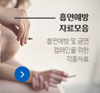

건강나침반
- 계통별 질환정보
- 계절별 유행질환
가스팽만
우리가 먹은 음식은 체내에서 발효되기 때문에 누구나 위나 장에 가스가 차 있다. 가스의 양은 사람에 따라 각기 다르며, 정상적으로는 거의 알아챌 수가 없다. 그러나 가스가 너무 많이 차서 느낄 수 있는 정도가 되면 의학적인 용어로 가스팽만이라고 한다. 위장에 가스가 지나치게 차는 현상을 말한다. 대개 심각한 것은 아니지만 트림을 한다거나 방귀를 통해서가스가 분출될 때 타인에게 불쾌감을 주므로 당황스럽게 한다.
| 증상 |
|
|---|---|
| 합병증 |
|
- 보건자료실더 보기
 미세먼지 예방교육
미세먼지 예방교육- 학부모님과 함께하는 보건소식
- 3월 보건소식지 활용, 봄 유행 질환
- 어린이를 위한 '동의'
- 제 30회 세계 금연의 날 기념식 주제영상
- 안전한 대한민국을 위한 착한 습관
- 나만의 노하우더 보기
- 습윤밴드 끈적임 없이 떼는 법
- 자동 온도 조절장치 설치
- 보건실 보건교육실 팻말 교체했습니다.
- 제가 사용하는 아이스팩과 거즈 주머니
- 감염병 예방 물품 학급 배부표
- 베개에 옷을 입혀봤어요